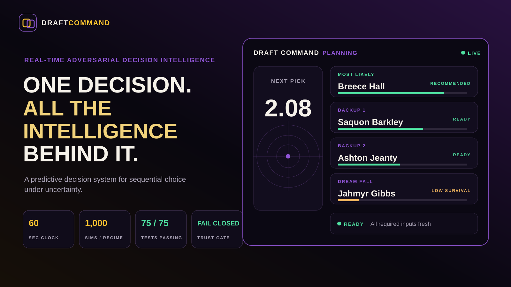
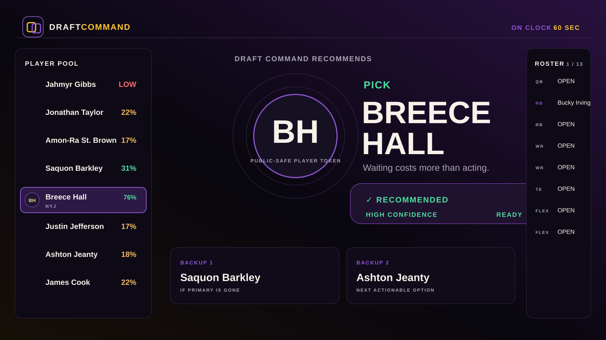
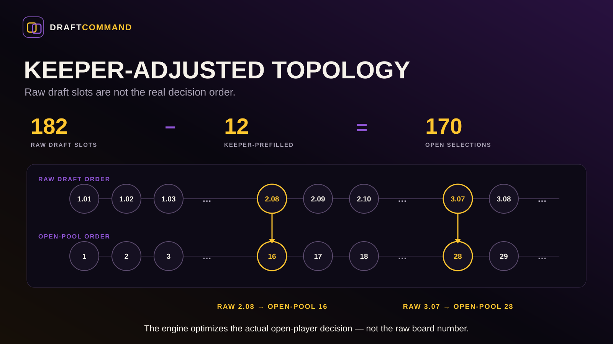
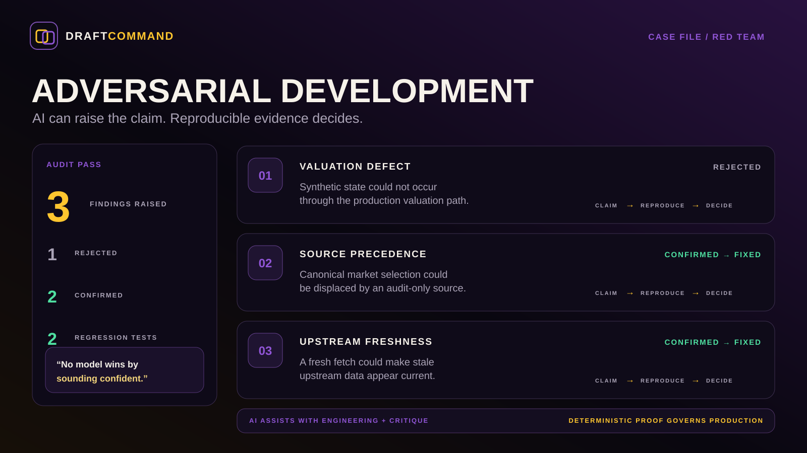

One current recommendation.

REAL-TIME ADVERSARIAL DECISION INTELLIGENCE
A predictive decision system, not a prediction system.
Draft Command turns changing state, roster context, market uncertainty, and the cost of waiting into one actionable recommendation for the decision right now.

WHAT YOU GET
A clearer decision — not just more data.
Ranked backups if the room changes.
Scan-friendly logic under pressure.
Timing becomes part of value.
Roster, rules, board, future decisions.
Withhold the answer when evidence is weak.

THE DECISION STACK
Complexity behind the glass.
GROUND TRUTH → VALUATION → MARKET → OPPORTUNITY COST → ACTION
Deterministic code owns numerical truth. Probabilistic modeling represents uncertainty. AI assists with engineering, critique, and explanation.

TRUST ARCHITECTURE
Fail closed, not confidently wrong.
No model wins by sounding confident. Reproducible evidence decides.
Private weights, tuning, operational data, and competitive heuristics remain private. The public showcase exposes the architecture, user value, and evidence—not the recipe.